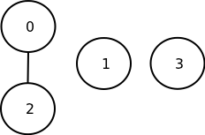
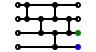
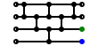
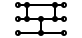

Introduction to Sorting Networks
Doug Hoyte
What are sorting networks?
- Algorithms for sorting numbers (or anything else that can be ordered)
-
Different from algorithms like quick sort
- All operations are planned out in advance (aka data-independent or oblivious)
- Any given sorting network only works on a fixed size input
- Not general purpose enough for most applications but sometimes they are essential
- Researched for 60+ years but still many unanswered questions
Compare-swap operations
Consider this array:
>>> array = [3,2,4]
Normal way to sort it:
>>> array.sort()
With a sorting network for size 3:
>>> def compare_swap(array, a, b):
... if array[a] < array[b]:
... (array[a], array[b]) = (array[b], array[a])
...
>>> compare_swap(array, 0, 1)
>>> compare_swap(array, 0, 2)
>>> compare_swap(array, 1, 2)
knuth diagrams
>>> def compare_swap(array, a, b):
... if array[a] > array[b]:
... (array[a], array[b]) = (array[b], array[a])
...
>>> compare_swap(array, 0, 1)
>>> compare_swap(array, 0, 2)
>>> compare_swap(array, 1, 2)
This is the corresponding sorting network notation (aka
knuth diagram):
x86 asm compiled with CMU lisp

2E: MOV EAX, [EDX+1] ;;; (LET ((A (AREF ARR 0)) (B (AREF ARR 2))) ...)
31: MOV ECX, [EDX+9]
34: CMP EAX, ECX
36: JLE L0
38: MOV [EDX+1], ECX ;;; (SETF (AREF ARR 0) B (AREF ARR 2) A)
3B: MOV [EDX+9], EAX
3E: L0: MOV EAX, [EDX+1] ;;; (LET ((A (AREF ARR 0)) (B (AREF ARR 1))) ...)
41: MOV ECX, [EDX+5]
44: CMP EAX, ECX
46: JLE L1
48: MOV [EDX+1], ECX ;;; (SETF (AREF ARR 0) B (AREF ARR 1) A)
4B: MOV [EDX+5], EAX
4E: L1: MOV EAX, [EDX+5] ;;; (LET ((A (AREF ARR 1)) (B (AREF ARR 2))) ...)
51: MOV ECX, [EDX+9]
54: CMP EAX, ECX
56: JLE L2
58: MOV [EDX+5], ECX ;;; (SETF (AREF ARR 1) B (AREF ARR 2) A)
5B: MOV [EDX+9], EAX
5E: L2: ...
Net Construction: Base case
- Arrays of 0 and 1 elements are already sorted
- If an array of 2 elements is out of order, just put them in order. The smallest value goes to the bottom:
- The green dots indicate that these output wires now contain elements in the correct positions
Adding another element
Sink the smallest element to the bottom:
Next treat the top two elements as an independent network and apply the two-element base case:
The second largest element is now in the middle and the largest on top.
Example: size 5, step 1
Move the smallest element to the bottom
Example: size 5, step 2
Then the next smallest to the second from the bottom
Example: size 5, step 3
And the next
Example: size 5, step 4
And finally the base case.
This is bubble sort except that the normal bubble sort returns as soon as it detects the array is sorted. Because this sorting network doesn't, it's a non-natural bubble sort:
Hasse diagrams
- Order theory is concerned with binary relations between items in a set
- Useful for analyzing sorting networks
- A sorting network's job is to turn a partially ordered set (aka poset) into a totally ordered set
- Here is a hasse diagram depicting an unsorted array (numbers are wire indices):
Hasse diagrams, 2

- If we do a compare-swap on wires 0 and 2, we end up with a 3-segment poset
- The hasse diagram indicates we now know the relative order between the elements on wires 0 and 2, but no other orders
Hasse diagrams, 3
- Comparing wires 1 and 3 gives a 2-segment poset
Hasse diagrams, 4

- Now we have a single poset to work with
- This diagram shows that element 0 now contains the largest value
- The smallest value isn't yet known: it could be in 2 or 3
Hasse diagrams, 5
- After sorting 2 and 3, the smallest value is now in 3
- The only thing remaining is to figure out which of the elements in 1 or 2 are larger
Hasse diagrams, 6
- We now have a totally ordered set
- Using hasse diagrams we have shown that this is a valid sorting network
Various network algorithms
|
Bubble
|
Bose-Nelson
|
|
Bitonic
|
Merge-Exchange
|
Micro-scale growth of algorithms
Macro-scale growth of algorithms
Big-𝓞 Complexity
- Bubble sorting networks require 𝓞(n2) comparison-swap operations where n is the length of the array to be sorted
- Best general-purpose sorting network algorithms entail 𝓞(n⋅log2(n)) operations
- Because sorting networks implement comparison sorts, the complexity lower bound is 𝓞(n⋅log(n))
- There is an 𝓞(n⋅log(n)) algorithm but it has an extremely high constant factor (so high that it isn't useful for arrays < than 26100)
- There is another algorithm with 𝓞(n⋅log(n)) and reasonable constant factors but it is incorrect for a small fraction of inputs
- An 𝓞(n⋅log(n)) algorithm that has reasonably small constant factors and is correct has not yet been discovered
Parallelism
- In standard sorting network notation, operations that don't overlap are shown in parallel
- Parallel operations can be done in any order or even at the same time
- Parallelism is most useful in special purpose circuit designs. However, being aware that certain comparisons can be re-ordered can also improve pipeline performance in software
Parallelism, 2
- There is actually even more parallelism possible in the networks than can be seen in the diagrams — we are limited by notation because we don't want the network lines to overlap
- For instance in the following network, operations 0 and 1 can be done in parallel, as can 2, 3, and 4:
Min/Max selection networks
- Sometimes we don't need to waste time sorting the whole array
- For example, if we only need to find the smallest element, the first step in our bubble sort construction would work
Median selection networks
| 3x3 image kernel |
Paeth's 9-element median filter |
|
|
|
Bi-directional networks
| |
|
|
- Down arrows are normal comparators that move the smallest to the bottom wire
- Up-arrows are the opposite: they move the smallest upwards
|
- Bi-directional networks can be converted into normal networks by twisting all up comparators into down comparators
|
- In order to prevent ugly wire crossings, untwist the wires all the way to the outputs
|
0-1 Principle
-
Given n distinct elements, there are n! possible orderings
- Pick the largest element. You have n different choices of the location to put it. Then pick the next largest element. Because the largest is occupying a spot, you now have only n-1 places to put it. Repeat. So the total number of possibilities are n⋅(n-1)⋅...⋅3⋅2⋅1 = n!
- The 0-1 principle states that any sorting network that is capable of sorting an array containing only the elements 0 and 1 (a bitstring) will also sort arrays of arbitrary elements
- There are "only" 2n bitstrings for a given n
- There are only n+1 sorted bitstrings for a given n
- The principle is important for many network designs (ie see bitonic sort)
Sort stability
- Transposition networks like bubble sort are stable (assuming compare-swap is < and not <=)
- Example: If green and blue inputs are equal their order will be preserved:


Sort stability, 2
- However, most useful networks are not stable
- Example: Assume green and blue are the smallest elements and they are equal. With a merge-exchange network their order is not preserved:
Swaps with 2n input combinations

| Input Array | Swaps Required |
|---|
| 000 | 0 |
| 001 | 2 |
| 010 | 1 |
| 011 | 2 |
| 100 | 0 |
| 101 | 1 |
| 110 | 0 |
| 111 | 0 |
| Avg | 0.75 |
|---|
|
| Input Array | Swaps Required |
|---|
| 000 | 0 |
| 001 | 1 |
| 010 | 1 |
| 011 | 1 |
| 100 | 0 |
| 101 | 1 |
| 110 | 0 |
| 111 | 0 |
| Avg | 0.5 |
|---|
|
|
- Even networks that have the same number of comparators and stages can perform differently depending on input
- In order to sort the array, the first network performs more swaps for some inputs
- Whether the first network is slower because of this depends on your architecture and compiler
|
Swaps with n! input combinations
| Input Array | Swaps Required |
|---|
| 210 | 0 |
| 120 | 1 |
| 102 | 2 |
| 201 | 1 |
| 021 | 2 |
| 012 | 3 |
| Avg | 1.5 |
|---|
|
| Input Array | Swaps Required |
|---|
| 210 | 0 |
| 120 | 1 |
| 102 | 2 |
| 201 | 1 |
| 021 | 2 |
| 012 | 1 |
| Avg | 1.17 |
|---|
|
|
- A slightly more intuitive way to look at the same thing is to consider n! array permutations instead of a bitstring
- Here we see that the first network has a pathologically bad case where all swaps are executed
- In the second network, the first operation is guaranteed to have put either the largest or smallest element into its final position
|
Closing a timing side-channel
- Many sorting algorithms take different amounts of time to complete depending on how sorted the array is already
- Adversaries can monitor side-channels like timing, power usage, and RF radiation to learn secret information. This is especially true for "tamper-proof" hardware like smart cards but is an issue for general-purpose systems as well
- Sorting networks plus a constant-time compare-swap are sort routines that don't leak information about the data being sorted
| Possibly leaky |
Constant-time (simple) |
Constant-time (best) |
int temp;
if (a[i] < a[j]) {
temp = a[i];
a[i] = a[j];
a[j] = temp;
}
|
int temp[2];
int noswap = !(a[i] < a[j]);
temp[0] = a[i];
temp[1] = a[j];
a[i] = temp[!noswap];
a[j] = temp[noswap];
|
#define max(x, y) (x ^ ((x ^ y) & -(x < y)))
#define min(x, y) (y ^ ((x ^ y) & -(x < y)))
int temp;
temp = max(a[i], a[j]);
a[j] = min(a[i], a[j]);
a[i] = temp;
|
x86-64 Asm, gcc 4.5.2 -O3
| Possibly Leaky |
|
39: mov 0x4(%rdi),%edx ;
42: mov 0x44(%rdi),%r13d ;
46: cmp %r13d,%edx ; a[0] < a[16]
49: mov %edx,-0x4(%rsp) ; temp = a[0]
53: jge 0x400746 <+70> ; maybe goto 70
55: mov %r13d,0x4(%rdi) ; a[0] = a[16]
59: mov %r13d,-0x4(%rsp) ;
64: mov %edx,%r13d ;
67: mov %edx,0x44(%rdi) ; a[16] = temp
70: ...
|
- The jge conditional jump at address 53 causes a timing leak on some systems
|
| Constant-time (simple) |
|
16: mov 0x40(%rdi),%edx
19: mov (%rdi),%ecx
21: cmp %edx,%ecx ; diff = !(a[0] < a[16])
31: setge %al
27: mov %ecx,-0x8(%rsp) ; temp[0] = a[0]
23: mov %edx,-0x4(%rsp) ; temp[1] = a[16]
37: mov %eax,%edx
41: xor $0x1,%edx
48: movslq %edx,%rdx
51: mov -0x8(%rsp,%rdx,4),%edx
68: mov %edx,-0x30(%rsp) ; a[0] = temp[!diff]
39: cltq
44: mov -0x8(%rsp,%rax,4),%eax
59: mov %eax,-0x40(%rsp) ; a[16] = temp[diff]
63: mov %eax,0x40(%rdi)
|
- No jumps
- Edited/re-ordered for clarity
|
Timing results: Sorting 32 ints
Intel Atom N550 (gcc 4.5.2)
| Algo |
Asc |
Desc |
Const |
| qsort(3) |
6.828 μs |
6.025 μs |
✗ |
| Leaky |
1.841 μs |
1.924 μs |
✗ |
| Const-simple |
3.057 μs |
3.057 μs |
✓ |
| Const-best |
1.900 μs |
1.901 μs |
✓ |
|
AMD Athlon II X2 215 (gcc 4.4.3)
| Algo |
Asc |
Desc |
Const |
| qsort(3) |
1.102 μs |
0.955 μs |
✗ |
| Leaky |
0.412 μs |
0.398 μs |
? |
| Const-simple |
0.749 μs |
0.748 μs |
✓ |
| Const-best |
0.458 μs |
0.457 μs |
✓ |
|
SPARC sun4v (gcc 4.4.3)
| Algo |
Asc |
Desc |
Const |
| qsort(3) |
5.900 μs |
20.112 μs |
✗ |
| Leaky |
5.696 μs |
4.240 μs |
✗ |
| Const-simple |
16.512 μs |
16.452 μs |
? |
| Const-best |
8.048 μs |
8.048 μs |
✓ |
|
ARM v7 rev 2 (gcc 4.4.5)
| Algo |
Asc |
Desc |
Const |
| qsort(3) |
10.041 μs |
8.166 μs |
✗ |
| Leaky |
2.333 μs |
2.333 μs |
✓ |
| Const-simple |
4.000 μs |
4.000 μs |
✓ |
| Const-best |
2.833 μs |
2.833 μs |
✓ |
|
- qsort(3) on SPARC is solaris implementation not glibc
- Results marked with ? have timing differences but I haven't looked into why
Misc Applications
-
Embedded devices
- Because running and sometimes generating sorting networks uses no stack space, sorting networks are useful on RAM-constrainted machines
- uClibc's qsort(3) uses a shell sort for this reason
-
Secure Multi-Party Communications
- Sorting networks are building blocks for cryptographic protocols that share aggregations of data between parties without revealing that data
- Financial data aggregates computed by companies without any company giving up specific details
- Comparing Intrustion Detection System (IDS) data between hosting providers without violating any customers' privacy
Research directions
- The genetic END artificial-intelligence program currently holds records for shortest possible networks of size 13 and 16
- Batcher and Baddar wrote a program in 2008 called SortNet for building better sorting networks and using it they have found a record for size 18
- The pairwise network is better for building selection networks than previous algorithms
- Find and fix sorting-related side-channel leaks
- Is it possible to write a GPU program to brute-force search for better networks?
Thanks
- Alan Paeth introduced me to sorting networks
- John Gamble wrote the perl module Algorithm::Networksort which I used to generate most of the knuth diagrams
- This presentation is made with S5
Conclusion
- Sorting networks are sorting algorithms where all operations are planned out ahead of time
- In software they are typically inlined into programs and then compiled to native code for performance
- There are also uses for sorting networks aside from performance
- Still researched after 60+ years of study